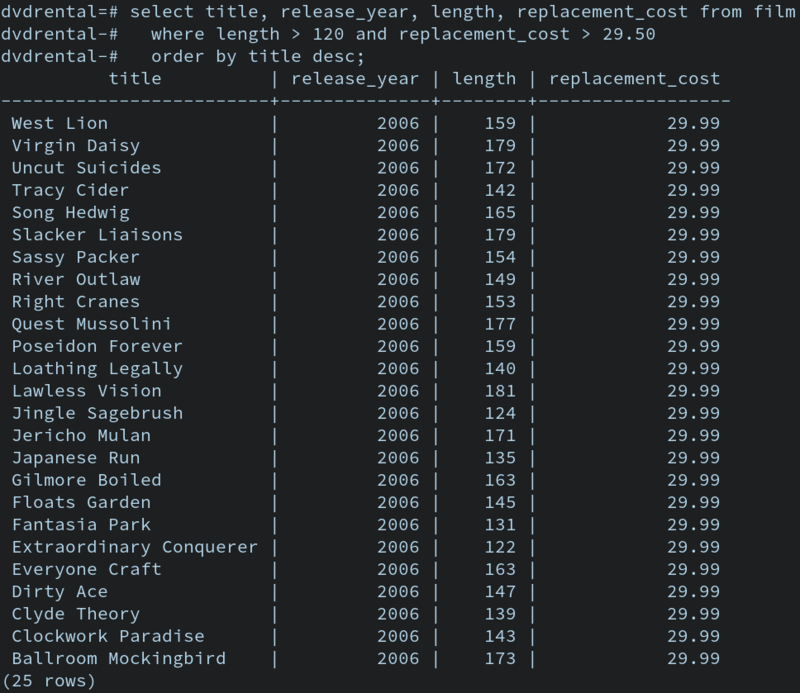

Computer Network
In computing, a database is an organized collection of data stored and accessed electronically. Small databases can be stored on a file system, while large databases are hosted on computer clusters or cloud storage. The design of databases spans formal techniques and practical considerations including data modeling, efficient data representation and storage, query languages, security and privacy of sensitive data, and distributed computing issues including supporting concurrent access and fault tolerance.
A database management system (DBMS) is the software that interacts with end users, applications, and the database itself to capture and analyze the data. The DBMS software additionally encompasses the core facilities provided to administer the database. The sum total of the database, the DBMS and the associated applications can be referred to as a database system. Often the term "database" is also used loosely to refer to any of the DBMS, the database system or an application associated with the database.
Computer scientists may classify database management systems according to the database models that they support. Relational databases became dominant in the 1980s. These model data as rows and columns in a series of tables, and the vast majority use SQL for writing and querying data. In the 2000s, non-relational databases became popular, collectively referred to as NoSQL because they use different query languages.